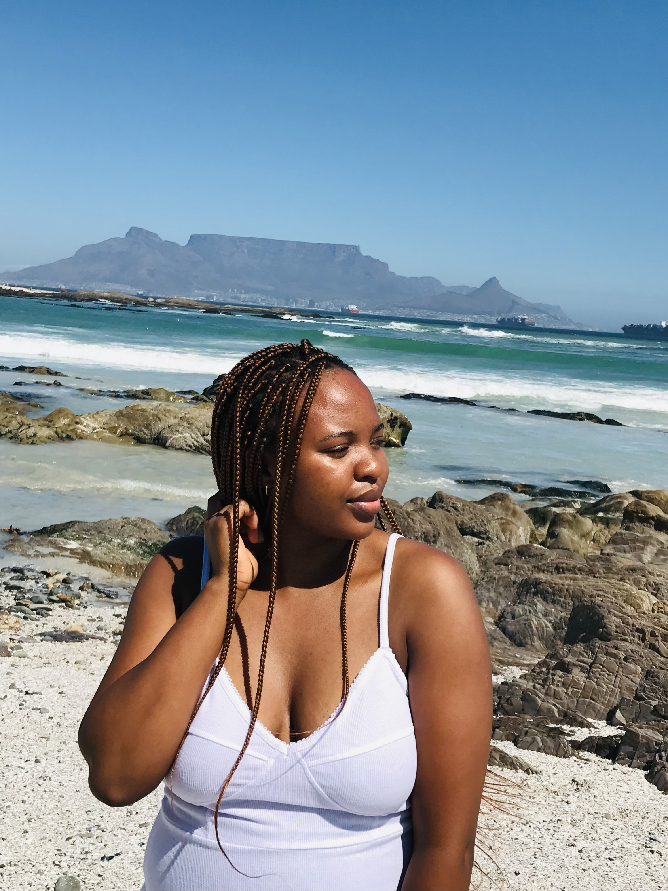

Phumza Kose
My City
Paris is the city I would love to go to because it is the most beautiful city in the world, and it boasts rich culture and art, both in museums and galleries as well as on streets and in theatres. I would love to explore Paris by visiting the famous Eiffel Tower where I can enjoy the views of the metropolis. Paris is full of monuments from all eras and has all architectural styles.
Foreign Language
French is the language I would like to learn beacuse I want to be able to communicate with people in Paris. Also it is the most beautiful language in the world. French is known as a romance language and the second most useful language in the world for business.
| ENGLISH | FRENCH |
|---|---|
| Hello how is your day? | Bonjour comment est votre journée |
| Is the weather good that side? | est-ce qu'il fait beau de ce côté |
| Let's go shopping | allons faire du shopping |
Historical Places
Castle of Good Hope
.jpg)
*The Castle acted as local headquarters for the
South African Army in the Western Cape.
*Inside the Castle walls there were among others
a church, bakery, workshops, living quarters, offices, cells and
numerous other facilities.
*The yellow paint on the walls was chosen to
reduce the glare from the sunlight and also because it reflects
the heat.
Parliament of RSA
*Parliament consists of four hundred members who
are elected every five years using a party-list proportional
representation system.
*Parliament consists of two Houses called the
National Assembly and National Council of Provinces. Each House
has its own distinct role and functions, as set out in the
Constitution.
*Members of Parliament have freedom of speech,
subject only to the rules of the Houses, when they participate in
committees or debates.
City Hall

*The Hall itself is made up of components from
all over the world. The honey-coloured stone, which makes up its
façade of limestone, was imported from Bath in England.
*The tower houses a clock and a number of bells,
modelled on the famous Big Ben.
*The clock strikes the hours and chimes the
Westminster quarters, which is a particular chime originating from
St Mary’s Cathedral in England.